Nov 29, 2026
I had gotten a selection assignment from my college drone club to basically turn the dataset of images of a particular ground, taken by their drone, into an orthomosaic image.
So first, I had to understand how an orthomosaic differs from a normal panoramic image which is taken by a camera. I asked Neon to make me some visualizations:
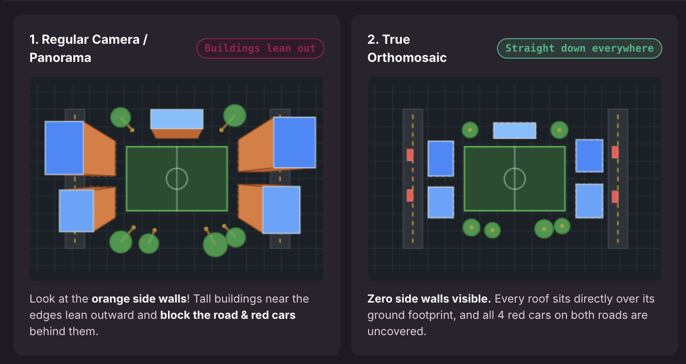
Here, we can see that in a regular photo, tall objects shift outward and the sizes of the objects which are closer are larger. Due to this stretching, we cannot get accurate measurements to use for analysis and processing for the drones. Also, we lose details like the cars on the road.
This way, we get a true flat 2D representation of the image.
So the next question I got was: don't we lose depth when we convert this into a flat 2D image? It turns out we actually don't — in fact, we create a more accurate 3D depth model of the entire image and combine it with the orthomosaic view.
Here is how the whole process of making this starts (the pipeline):
So here, we basically look at our dataset, fix some points across all images, and call them key points.
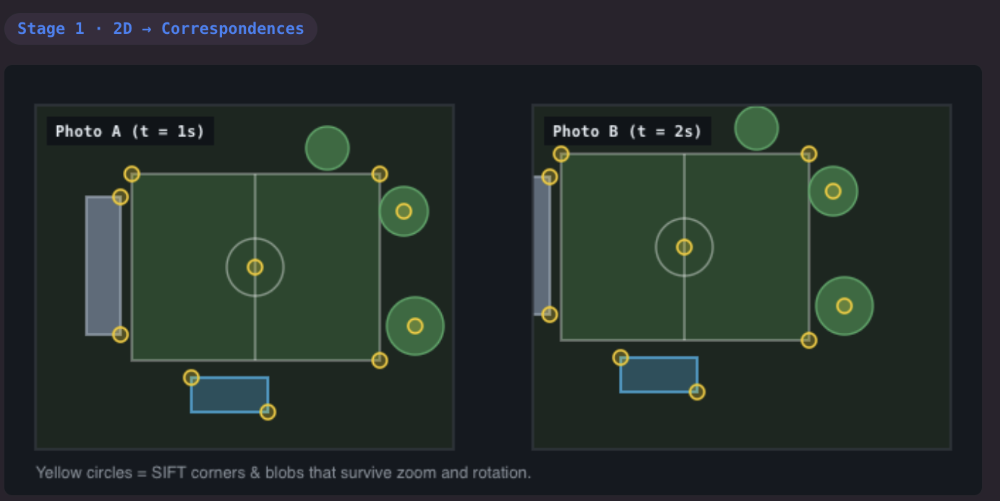
Now we match all these points.
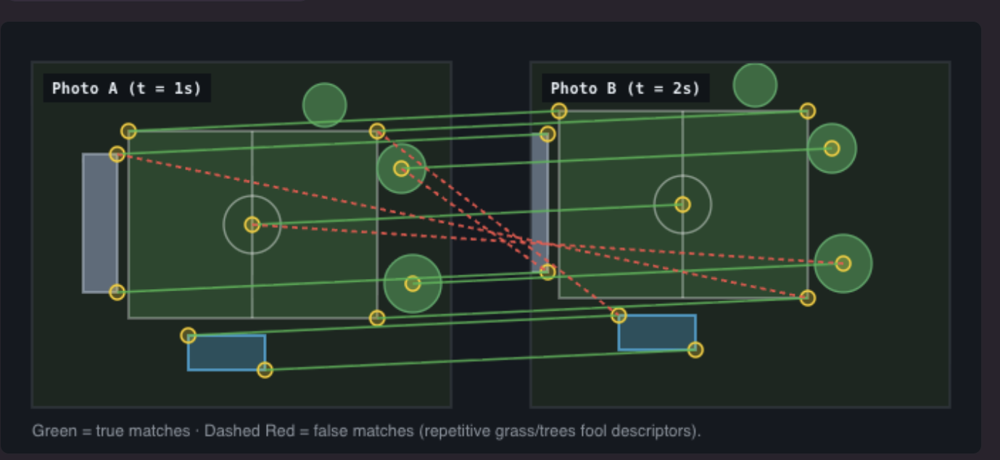
Here we can see some red lines, which means features are not mapped properly, so we run them through a filter to clean these errors.
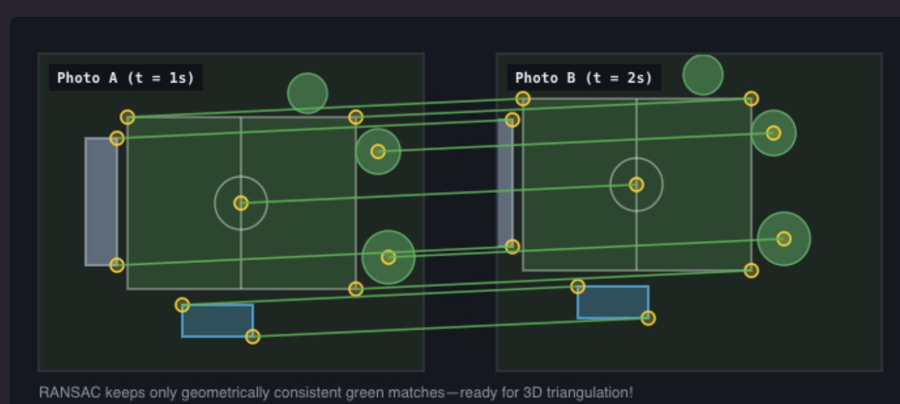
Some basic stuff I had to understand first:
The principle of parallax. When we switch eyes and look at a closer object, it appears to shift a lot, but when we look at a faraway object, it shifts way less. So using this principle, we can predict if a pixel is closer or farther.
Now this is simple: tall objects are closer, so they shift faster than the small objects which are further away, so they move slower. I have attached a snapshot at a point and its motion speed in the camera feed. This helps us find the depth of the pixels in the image.
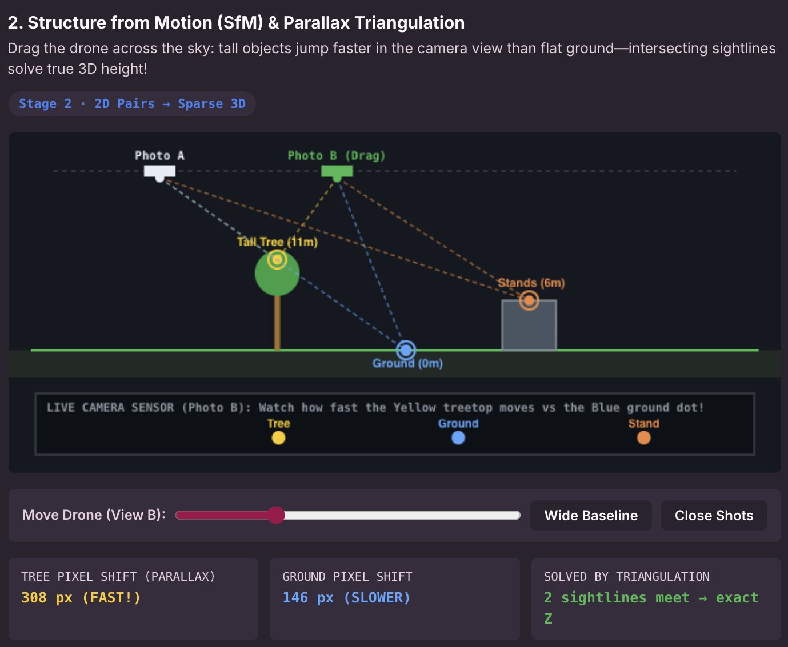
Basically, now we use the key points and their depth we got from step 2 to build a sparse model.
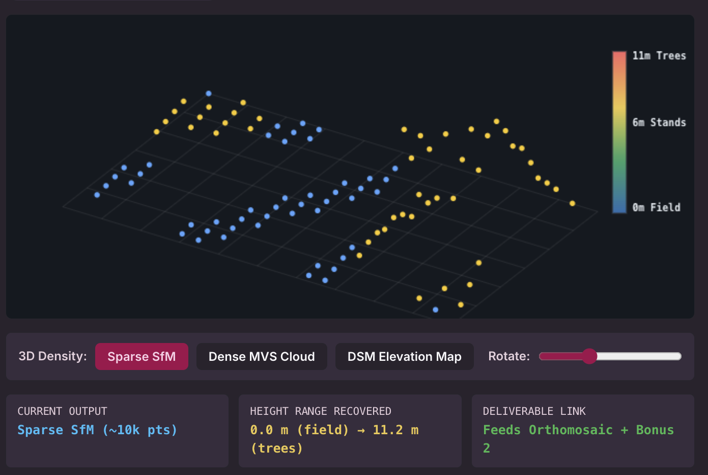
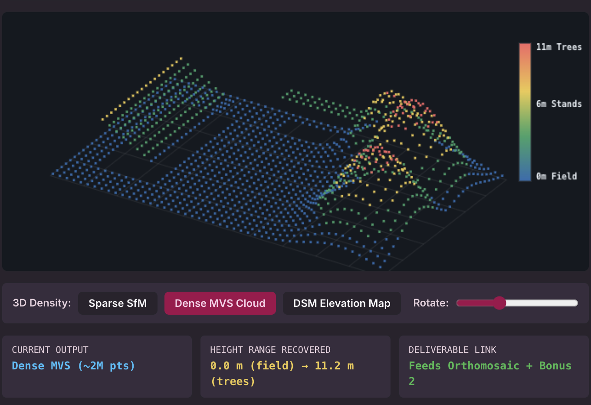
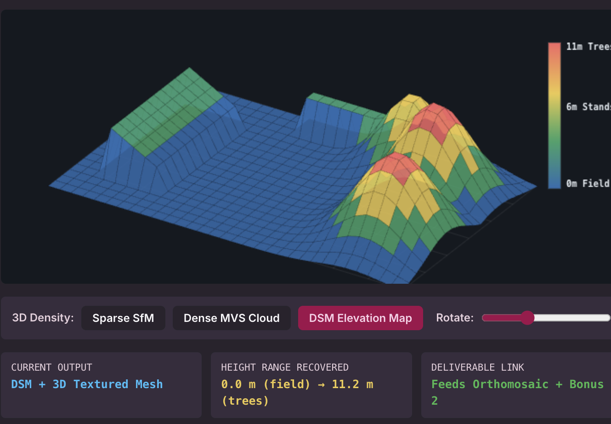
This step means mapping the points in our photo to actual coordinates. This helps us scale the image properly and also find actual distances between points/pixels.
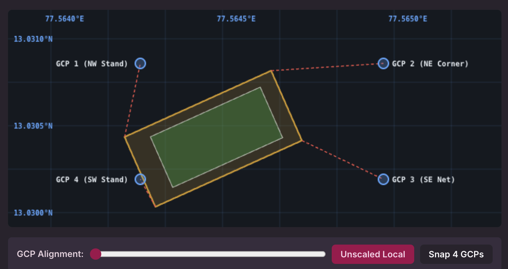
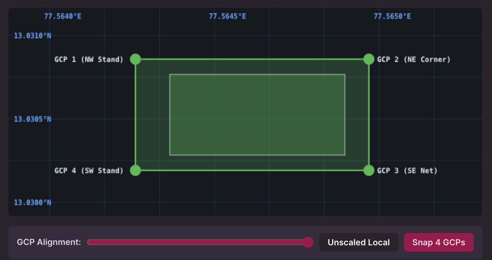
We get this orthomosaic view with the depth of each pixel and its actual coordinate. Here are a few snapshots.
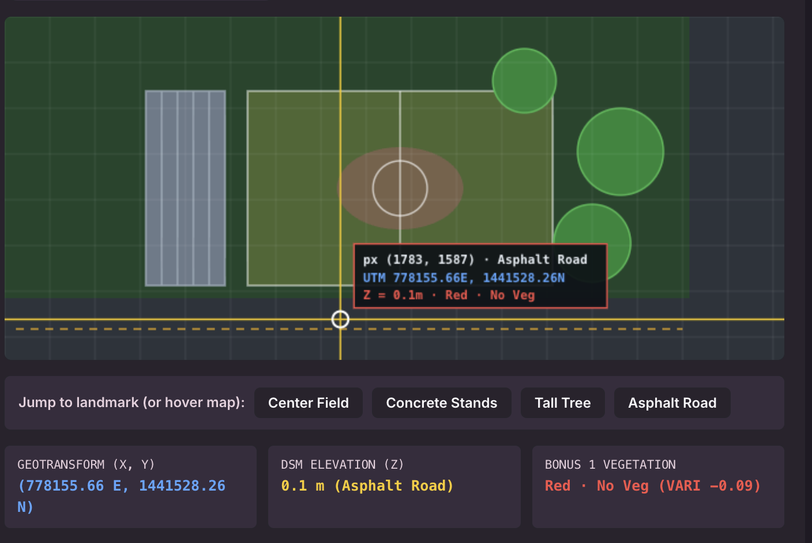
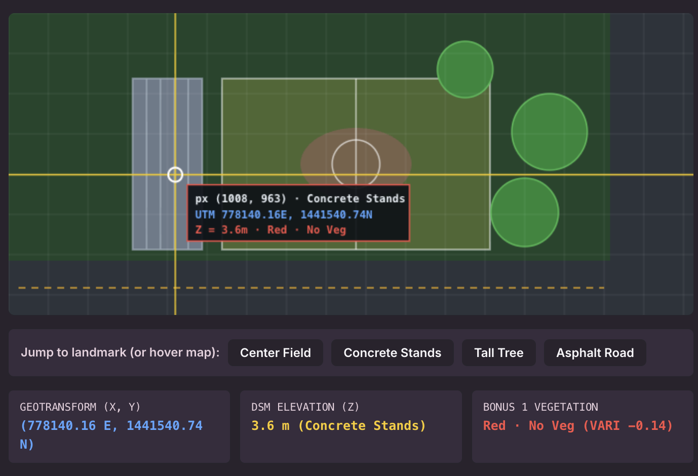
Now, the whole process I explained above is usually done with ODM via OrbStack (like Docker) and Python scripts.
I did not focus a lot on the pipeline and just used the standard one which Neon recommended for my machine. Neon used this pipeline to run all the scripts inside an OrbStack container and then gave me the outputs.
I chose this setup because it produces all the stuff we need — like the orthomosaic, DSM cloud, etc. — in one seamless run using a standard procedure and scripts. I did do the run with a RAM limit due to the constraints of my machine.
I used Gemini Neon on Medium effort in T3 Code to generate interactive visualizations to help me understand these concepts, and to fix typos and punctuation in this piece.